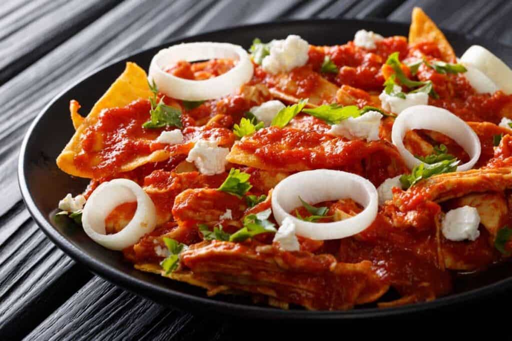

Chilaquiles Rojos

Description
Loaded with the flavors of Mexico--poblano and chipotle chiles, cilantro, adobo, and queso fresco--this chicken and tortilla casserole is a sure crowd pleaser.
Chilaquiles are a traditional Mexican breakfast dish consisting of corn tortillas cut into quarters and lightly fried. Typically, corn tortillas cut into quarters and lightly fried, or baked for a lighter version, are the basis of the dish. Green or red salsa is poured over the crisp tortilla triangles.
Ingredients
- 10 (6 inch) corn tortillas, each cut into 8 wedges
- Vegetable oil spray
- 2 poblano chiles, steamed, seeded, and chopped coarse
- 2 onions, minced
- 2 teaspoons Melt® Organic Buttery Spread
- Salt
- ¼ cup minced fresh cilantro
- 6 cloves garlic, minced
- 2 teaspoons minced canned chipotle peppers in adobo sauce
- 1 (14.5 ounce) can whole peeled tomatoes
- ¾ cup low-sodium chicken broth
- 1 ½ pounds boneless chicken breasts, trimmed
- Pepper
- 3 ounces crumbled queso fresco or feta cheese
- ¼ cup low-fat sour cream
- 1 tablespoon fresh lime juice
- tomato, cored, seeded and chopped medium
Steps
- Adjust the oven racks to the upper-middle and lower-middle positions and heat the oven to 350 degrees. Spread the tortilla wedges on 2 rimmed baking sheets. Lightly coat both sides of the tortilla with vegetable oil spray.
- Bake the tortilla wedges until they are lightly browned and begin to crisp, 8 to 12 minutes. Flip the tortilla wedges and continue to bake until the chips are fully toasted, 8 to 12 minutes longer. Set the tortilla wedges aside and turn the oven to 500 degrees.
- Combine the poblano chiles, 1 cup of the onions, Melt®, and 1/8 teaspoon salt in a 12-inch skillet. Cover and cook over medium-low heat until the vegetables are softened, 8 to 10 minutes. Uncover, increase the heat to medium-high, and continue to cook, stirring occasionally, until the vegetables are lightly browned, 4 to 6 minutes longer.
- Stir in 2 tablespoons of the cilantro, garlic, and chipotles and cook until fragrant, about 30 seconds. Stir in the tomatoes with their juice and the broth. Pat the chicken breasts dry with paper towels and season with 1/8 teaspoon pepper. Nestle the chicken breasts into the sauce and bring to a simmer over medium-low heat, about 5 minutes. When the sauce simmers, flip the chicken, cover, and continue to cook until the chicken registers 160 to 165 degrees on an instant-read thermometer, 10 to 12 minutes longer.
- Transfer the chicken to a plate. When cool enough to handle, shred the meat into bite-sized pieces. Process the sauce in a blender until completely smooth, about 1 minute. Return the sauce to the skillet, season with salt and pepper to taste, bring to a simmer over medium heat.
- Stir in the tortillas and cook until they begin to soften, about 2 minutes. Stir in the shredded chicken, then transfer the mixture to an 8-inch square baking dish. Sprinkle with the cheese and bake on the lower-middle rack until hot throughout, 5 to 10 minutes.